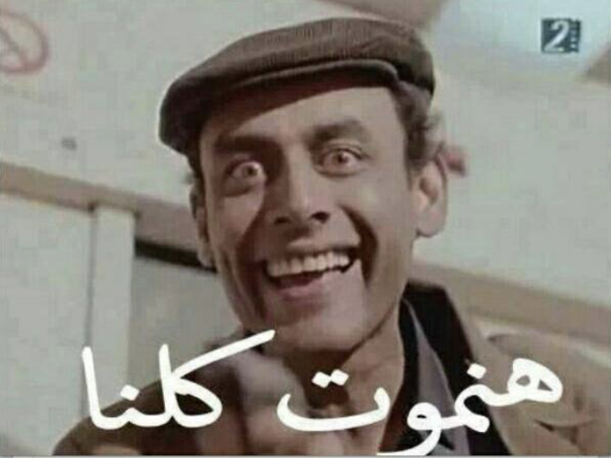

A still from the film, A Hero made out of Paper (1988)
Content Warning: A long post about death, suicide, euthanasia
+18To beguile the time, I decided to teach a course on death, for the CILAS solidarity cycle, and my initial idea was to open up a very generic conversation around death, its rituals, medicalization, moral obligations to the dead, post-mortem relationships and their meaning,...etc. I intentionally avoided delving into conversations around suicide, assisted-suicide, and abortion, as I felt I might not be the most qualified person to moderate such conversations. Yet the participants in the course, 99% women, collectively agreed that we should not turn away from the inescapable conversation on 'the act of killing'. And as I was sifting through different references, texts, sources, medical and legal treatise, I kept thinking of how fundamentally different such conversation would be in a context like Egypt. Technically suicide is not illegal and is not a 'criminal offence' in Egypt (a surprise, considering how historically Islamic jurisprudence forbade suicide in all its forms and in stark comparison to many European countries, that not only forbade suicide, but punished those who undertook their own self-killing and even confiscated their assets, as a fine), and yet we would not really need to have a conversation about assisted-suicide, or even euthanasia, because the truth of the matter is, even the most financially and medically equipped person in Egypt, will die of some kind of negligence if they are victims of debilitating disease or terminal illness.
In Egypt, the debate around the long-term care of those who suffer debilitating disease and conditions, immediately ties to the systematic disinvestment in healthcare and issues of class injustice and wide, disturbing income inequality. The majority would not and could not afford to give long-term care for loved ones who might be suffering from terminal illness or debilitating conditions. The conversation around the burden and the quality of life that people with terminal disease or people with debilitating conditions can enjoy, only makes sense in countries where there can be a possibility of some kind of care that would sustain the lives of such victims. This would not be the case in Egypt. Where the majority would eventually die because of negligence and the lack of proper and requisite care. The 'act of killing', whether via active euthanasia or assisted-suicide would have a profoundly very different scope and meaning in Egypt. It would no longer be about the sanctity of life, or if the person posses the mind and will to end their life, or if the state has a claim on the minds and bodies of people, beyond their agency and sense of self. None of this makes any sense in Egypt.
In Egypt, the debate would be entirely framed on the state's already pre-existing assumption that, not only it owns the lives of people, and their bodies, and the labour of their bodies, but that their lives do not merit either respect or interest. The presence of so many of these bodies renders them redundant at best, a nuisance at worst. The Egyptian state, is reduced to an extractive, punitive state, that sees its populations a source to extract value from and potential threat to penalize and eventually kill if necessary (by commission or omission). Its a vertiginous process to try and make sense of all those ongoing debates in Europe around death and suicide and think how can they be 'translated' here? They can't.
A military dictatorship doesn't see citizens, nor subjects, it sees enemies, civilian enemies, that are a liability, rather than a constituency that holds power and whose lives and interests must be safeguarded at all costs. People's response to this deeply vicious desire to annihilate and subdue, ranges from total ingratiation with power (the 10%), to desperate attempts at maintaining semblance of autonomy and self-worth (with little success for most of the time), to gradually internalizing the logic of the state, only by submission, meek submission, can one manage to eke a living.
I don't know how I feel about that debate. The liberal argument is silly and uninteresting, and the idea of 'negative freedom', holds very little appeal. I don't know what kind of freedom is that, to be 'free from something', but not to be, in your own right, a subject endowed with a certain inviolability, beyond what we think of as the 'state'. I do understand that national fictions create the worst possible scenario to understand something as complex as the act of killing. Life and death acquire such farcical meaning, especially now in the Arab world, when the worth and value of giving up such life, is to shield preposterously, corrupt, murderous elites.